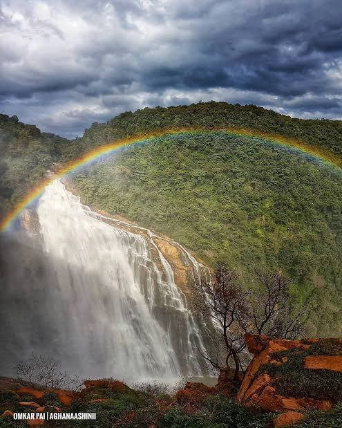

01
63 KM
Jog Falls
One of India's most spectacular waterfalls, formed by the Sharavathi River.
WESTERN GHATS · WATERFALL EXPLORER
Follow the Aghanashini River as it plunges into a forested valley, creating one of Karnataka's most dramatic natural cascades.
Unchalli Falls, also known as Lushington Falls, lies in Uttara Kannada's forested Western Ghats near Heggarne and Sirsi.
The Aghanashini River reaches the steep western face of the Sahyadri hills before plunging roughly 116 metres at Unchalli Falls.
The falls are surrounded by dense forest and rugged terrain. Visitors can view the cascade from a viewing deck and follow a path towards the lower viewpoint.
The waterfall is especially impressive after the monsoon, when the river carries greater seasonal flow through the Western Ghats.
Use the scale to compare the documented vertical drop of Unchalli Falls with familiar structures.
Full documented drop of Unchalli Falls.
Explore the landscape around the waterfall through three visual viewpoints.

Dense vegetation and steep terrain frame the waterfall's descent.
Water flow changes with the seasonal rhythm of the Western Ghats.
Heavy monsoon rainfall increases the flow of the Aghanashini River and dramatically strengthens the waterfall's volume and spray.
Unchalli Falls occurs where the Aghanashini River reaches the steep western face of the Western Ghats and drops into a rugged valley.
The combination of river erosion, resistant rock surfaces, steep relief and heavy seasonal rainfall creates the dramatic waterfall landscape.
Unchalli Falls is located in Uttara Kannada, Karnataka, near Heggarne and Sirsi.
Pair Unchalli Falls with other landscapes and destinations across Uttara Kannada and Karnataka.
One of India's most spectacular waterfalls, formed by the Sharavathi River.
A coastal destination known for beaches, temples and the Arabian Sea landscape.
A coastal pilgrimage destination famous for its temple and sea views.
A forest and wildlife destination associated with the Kali River landscape.
Explore the waterfall, valley and forest through a visual archive.
Historical, geographic and visitor information should be read alongside the original sources below.
Images used on this explorer should retain their
original creator, license and source information.
Replace the credit entries below with the exact
attribution details for the photographs added to
frontend/assets/images/.